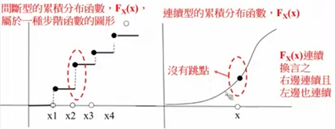
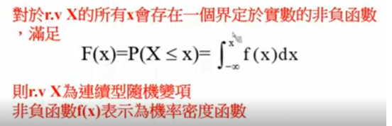
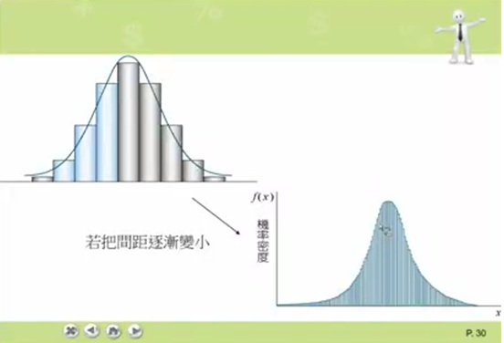

第 2 章 · 隨機變數
觀念 1：機率分配的本質
「分配」字面意義就是「分一分、配一配」。機率分配 = 把總機率 1 這塊餅分配給所有可能結果的規則。
本質是一個函數：
- 輸入：可能的結果（x 值）
- 輸出：對應的機率（離散）或機率密度（連續）
滿足兩條公理：
- $P(x)$
- 隨機變數取值 $x$ 的機率（離散），值介於 0 到 1 之間
- $\geq$
- 「大於或等於」
- $\sum$
- 希臘字 sigma，意思是「加總」——把後面的東西全部加起來
- $\int$
- 「積分」符號，是拉長的 S，代表連續版本的「加總」
- $-\infty,\ \infty$
- 負無窮大、正無窮大（積分從整條實數線走過）
- $f(x)$
- 機率密度函數（連續），給定 $x$ 輸出該點的「密度」
- $dx$
- 對 $x$ 的微小寬度，要跟 $f(x)$ 相乘才會變成機率
為何連續型 P(X = x₀) = 0？
連續型有無限多個可能值要瓜分總機率 1，每個單點分到的就是「無限小」即 0。機率藏在密度中，必須對一段區間積分才不為零。
觀念 2：波松分配逼近二項分配
二項分配 $B(n, p)$ 的機率公式需要算組合數 $\binom{n}{k}$，當 $n$ 很大時計算非常繁瑣。 統計學家發現：當事件夠「罕見」時，可以改用波松分配來近似，答案幾乎一樣，計算卻簡單得多。
適用條件
- $n$
- 試驗次數（要夠大，≥ 20）
- $p$
- 每次成功的機率（要夠小，讓 np ≤ 7）
- $\lambda$
- 希臘字 lambda，波松分配的唯一參數，等於 np（平均成功次數）
- $np \le 7$
- 確保「成功事件」夠罕見，近似才精準；若 p 接近 0.5 則不適用
白話理解
想像你要算「10000 人裡有幾人中獎（p = 0.0003）」。二項分配要算 $\binom{10000}{k}$，數字龐大； 換成波松分配，只需要 $\lambda = 10000 \times 0.0003 = 3$，公式變成 $e^{-3} \cdot 3^k / k!$，手算或查表都可以。 本質：n 很大但 p 很小，個別事件發生「稀稀落落」，這正是波松分配擅長描述的情境。
波松分配的機率公式（供參）
- $e$
- 自然常數，約 2.71828
- $k!$
- $k$ 的階乘，例如 $3! = 3 \times 2 \times 1 = 6$
- $\lambda$
- 平均發生次數（代入 $np$ 即可）
| 情境 | 可以近似？ | 原因 |
|---|---|---|
| $n = 500,\ p = 0.01$（$np = 5$） | ✓ | n ≥ 20 且 np = 5 ≤ 7，符合條件 |
| $n = 50,\ p = 0.3$（$np = 15$） | ✗ | np = 15 > 7，p 不夠小，近似誤差大 |
| $n = 10,\ p = 0.001$（$np = 0.01$） | ✗ | n < 20，樣本太小，直接算二項更準確 |
觀念 3：PMF / PDF / CDF
三個英文縮寫的全名：
- PMF = Probability Mass Function（機率質量函數，離散用）
- PDF = Probability Density Function（機率密度函數,連續用）
- CDF = Cumulative Distribution Function（累積分配函數，通用）
離散 vs 連續 CDF
- 離散型 CDF：階梯函數，每個可能值處跳一階，跳高 = 該點 PMF
- 連續型 CDF：平滑曲線，沒有跳點，PDF = F'(x)

互動：離散 vs 連續 CDF 並排
下圖實際畫出兩種 CDF。左邊離散 CDF 在每個可能值處有「跳點」（標出空心圈表示左極限、實心圈表示跳到的高度）；右邊連續 CDF 是平滑斜線，沒有任何跳點。

| 情境 | 對嗎？ | 說明 |
|---|---|---|
| 離散：PMF $f(3) = 0.4$ → $P(X = 3) = 0.4$ | ✓ | PMF 的值「就是」機率 |
| 連續：PDF $f(3) = 0.4$ → $P(X = 3) = 0.4$ | ✗ | PDF 不是機率；連續型 $P(X = 3) = 0$，永遠 |
| 連續：PDF $f(x) = 2$ 是合法 PDF | ✓ | PDF 值可以 > 1，例如 $U(0, 0.5)$ 的 $f(x) = 2$ |
| 連續：機率需要積分才出得來 | ✓ | $P(a \le X \le b) = \int_a^b f(x)\,dx$（曲線下面積） |
PMF 是「機率」（probability mass），PDF 是「機率密度」（probability density）。密度 × 寬度 = 機率，這就是為什麼連續型一定要積分。
對單點機率的拆解：
- $X$
- 隨機變數（大寫，表示「會變動的量」）
- $x_0$
- 某個特定的數值（小寫，下標 0 只是標籤，不是次方）
- $P(X = x_0)$
- 「$X$ 剛好等於 $x_0$ 這件事的機率」
- $F$
- 累積分配函數（CDF），$F(x) = P(X \le x)$
- $x_0^-$
- 「從左邊逼近 $x_0$」的位置——也就是 $x_0$ 之前的瞬間。負號不是次方，是「左極限」記號
離散型：跳高（> 0）；連續型：等於 0（CDF 左連續且右連續）。
觀念 4：Σ 與 ∫ 的統一性
積分本質就是「無限多個無限薄條的加總」。
- $\int_a^b$
- 從 $a$ 積分到 $b$（$a$ 是下限、$b$ 是上限）
- $f(x_i)$
- 函數 $f$ 在第 $i$ 個取樣點的值，可想像為一根長方形的「高度」
- $\Delta x$
- 每根長方形的「寬度」（$\Delta$ 是希臘字 delta，表示「微小差異」）
- $f(x_i)\,\Delta x$
- 「高 × 寬」= 一根長方形的面積
- $\sum_{i=1}^{n}$
- 把 $n$ 根長方形的面積加起來
- $\lim_{n\to\infty}$
- 讓 $n$ 趨近無限大（也就是讓寬度趨近 0、根數趨近無限）
∫ 符號就是拉長的 S，S 來自 Sum（加總）。
差別在於：
- 離散：可數的「機率塊」 → 用 Σ 一顆顆加
- 連續：不可數，需切成無限薄條 → 用 ∫ 取極限
底層邏輯都是「把該區間內的所有機率聚合起來」。

互動：自己「切得更細」看極限
下圖一開始有 6 根直方圖逼近一條鐘形 PDF（綠色虛線是真實曲線）。每按一次「切得更細」按鈕，柱數翻倍。試試看點到第 5 次以後，直方圖會自動變成平滑曲線——這就是積分 = 無限薄條的加總的視覺化證明。
觀念 5：機率「藏在面積裡」（連續型專屬）
離散型的 PMF 值「就是」機率；但連續型的 PDF 值不是機率——機率藏在曲線下的面積。下圖把這件事畫出來：
把 a 拖到 −∞、b 拖到 ∞，整條曲線下的面積會恰好等於 1，這就是「總機率 = 1」的視覺呈現。
所以連續型的兩個關鍵口訣：
- PDF f(x) 不是機率，是「機率密度」（單位寬度的機率）
- 機率 = 曲線下的面積，要靠 ∫ 算出來，不能用「點的高度」